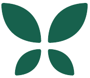
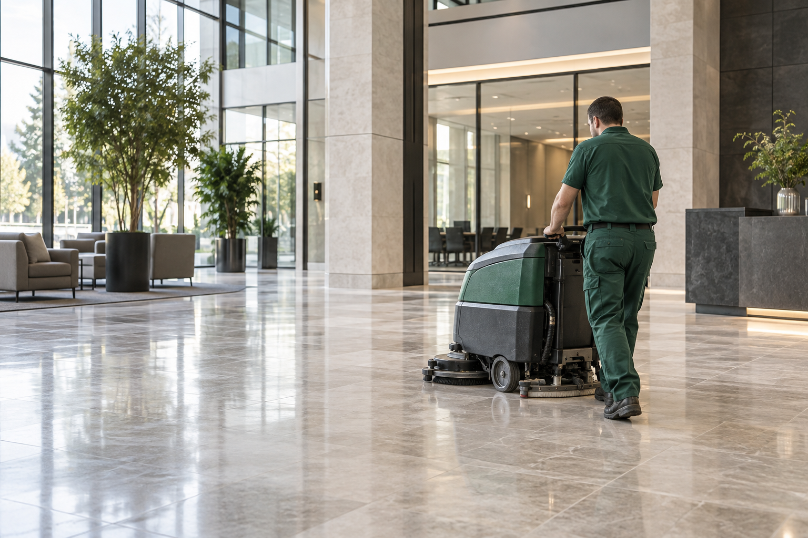

نظافة
مرافقك.
نرصد المناطق الحساسة قبل تفاقم المشكلة.
خدمات المكافحة 5D والنظافة المهنية
قد تهدد الآفات نظافة منشأتك وثقة زبنائك. تساعدك أوريزيا بطنجة على تحديد المخاطر ومعالجة أسبابها والوقاية من عودتها.

ما نسعى معك إلى حمايته
نرصد المناطق الحساسة قبل تفاقم المشكلة.
ننظم التدخل بما يراعي متطلبات مؤسستك.
نراعي أماكن العمل والاستقبال والمعيشة.
فهم احتياجاتك / بيئة نشاطك
تختلف المعالجة بين المطبخ والمستودع والمنزل. ننطلق دائمًا من طبيعة المكان واحتياجاته.
مناطق التحضير والتخزين ومصادر المياه والمداخل: يساعد التشخيص على تحديد العوامل التي تسهّل انتشار الآفات.
فهم الحل / خدمات 5D
نوع المشكلة هو ما يحدد طريقة المعالجة. وتتيح تخصصات أوريزيا الخمسة اختيار الحل الملائم لكل بيئة.
مقاربة شاملة
للتحكم في الآفات.

رصد مشكلات الجرذان والفئران والوقاية منها ومعالجتها.
الجرذان · الفئرانمكافحة الحشرات الزاحفة والطائرة حسب نوعها ومستوى الإصابة.
الصراصير · بقّ الفراش · النملتطهير الأسطح والأماكن التي تستدعي تدخلًا صحيًا ملائمًا.
الأسطح · الأماكن الحساسةتحديد مصادر الروائح المستمرة لاختيار المعالجة المناسبة.
تحديد المصدر · معالجة الروائحالوقاية والتدخل لمعالجة الوجود غير المرغوب فيه للزواحف.
وقاية · تدخل ملائمفهم الحل / منهجية أوريزيا
نحدد الأسباب ثم نعالج المشكلة ونتابع تطورها. كل خطوة تمهّد للخطوة التالية.
زيارة مجانية لمعاينة الموقع وتحديد المشكلة.
نقيّم المناطق الحساسة وعوامل الخطر ومستوى الإصابة.
نضع بروتوكولًا بحسب نوع الآفة والمكان ومتطلبات النشاط.
نتحقق بعد التدخل من النقاط الحرجة وتطور الوضع.
نقدّم توصيات وبرنامجًا دوريًا عند الحاجة لضمان استمرارية العمل.
تبدأ الخطة المناسبة بفحص دقيق لمرافقك.
اطلب تشخيصًا مجانيًا
فهم الحل / النظافة اليومية
يكمّل التنظيف جهود مكافحة الآفات. وترافق أوريزيا المهنيين في تنظيف مرافقهم والمحافظة على نظافتها.
اختيار بثقة / تدخل واضح
يعتمد التدخل المهني على تشخيص وخطة ملائمة وملاحظات تساعد على المتابعة.
نختار الحل بناءً على ما نلاحظه في موقعك.
يمكن توثيق التدخلات المهنية للاحتفاظ بالملاحظات والتوصيات.
نراعي العوامل التي تساعد على ظهور الآفات في خطة الوقاية.
منهجية المتابعة
تحديد المناطق الحساسة ومؤشرات وجود الآفات.
توضيح الإجراءات والبروتوكول المعتمد.
تسجيل الملاحظات الضرورية للمتابعة المهنية.
تحديد التوصيات والخطوات المقبلة.
مخطط منهجية أوريزيا.
التزاماتنا / المنتجات والممارسات
نستعمل منتجات مرخّصًا بها ومعتمدة لدى المكتب الوطني للسلامة الصحية للمنتجات الغذائية (أونسا)، حسب الاستخدامات المعنية، مع الالتزام بشروط استعمالها.
نسترشد بمبادئ الصحة والسلامة المهنية الواردة في سلسلة ISO 45000، بما يشمل الوقاية من المخاطر وحماية العاملين والتحسين المستمر.
اختيار بثقة / العرض المناسب
تدخل موجّه لمشكلة محددة، أو برنامج متابعة للمواقع المعرّضة لمخاطر متكررة.
حددت مشكلة وتبحث عن حل ملائم لها.
تحتاج مؤسستك إلى متابعة منظمة على المدى الطويل.
اختيار بثقة / أسئلتك
التكلفة وعدد الزيارات ومجال التدخل: إليك الإجابات قبل الانطلاق.
اطرح سؤالًا آخرلا. توفر أوريزيا زيارة تشخيصية مجانية لتقييم المكان وتحديد الحل المناسب.
تختلف التكلفة بحسب نوع الآفة والمساحة ومستوى الإصابة وطبيعة المكان وعدد التدخلات اللازمة. ويساعد التشخيص على إعداد عرض ملائم.
يتوقف ذلك على نوع الآفة ومستوى الإصابة. وقد تستدعي بعض الحالات المراقبة أو عدة زيارات.
تتدخل أوريزيا أساسًا بطنجة ونواحيها، ويمكنها تنفيذ مهام في مناطق أخرى بالمغرب بحسب طبيعتها.
نعم. يشكّل المهنيون محور خدمات أوريزيا، عبر تدخلات ظرفية وبرامج دورية للمكافحة والمتابعة.
نعم. يمكن للأفراد طلب تشخيص وتدخل يتناسبان مع حالتهم.
ابدأ الآن / تشخيص مجاني
صف لنا طبيعة المكان والعلامات التي لاحظتها. تتيح الزيارة تقييم الوضع قبل اقتراح الحل المناسب.
طنجة ونواحيها أولويتنا
نتدخل في مختلف أنحاء المغرب بحسب طبيعة المهمة.
الهاتف: 06 60 11 67 65
واتساب: 06 60 11 67 65
البريد الإلكتروني: contact@oreziagroup.com